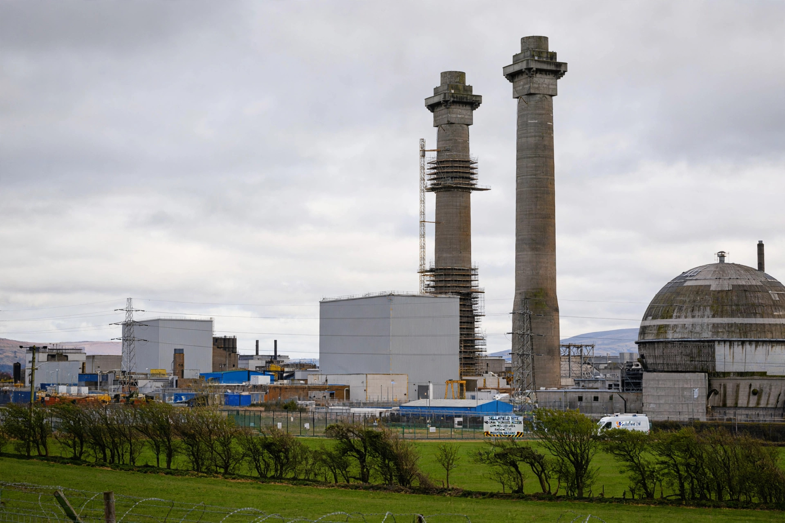

Windscale fire
| Windscale fire | |
|---|---|
| Date | 10 October 1957 |
| Location | Windscale (now Sellafield), Cumbria, England |
| Severity | Level 5 on the INES scale |
| Cause | Overheating during Wigner energy release; graphite fire |
The Windscale fire of 10 October 1957 was the worst nuclear accident in British history, and one of the worst in the world at the time. Fire broke out in the graphite core of Pile No. 1 at the Windscale nuclear site (now Sellafield) in Cumbria, releasing radioactive contamination across the United Kingdom and Europe.

1. The piles
2. The accident
3. Consequences
4. Aftermath
The piles
Windscale's two "piles" were air-cooled, graphite-moderated reactors built in haste after the war to produce plutonium for Britain's first atomic bombs. Because plutonium production for weapons demanded rapid turnaround, safety instrumentation was minimal; filters on the exhaust chimneys — derided as "Cockcroft's Folly" after Sir John Cockcroft, who insisted on them — later proved crucial.
The accident
On 7–8 October 1957, operators performed a controlled release of accumulated Wigner energy in the graphite of Pile No. 1. A second heating attempt overheated the core; uranium fuel cartridges ignited. The graphite burned for three days, releasing iodine-131, caesium-137 and other fission products up the chimney, where the filters trapped most of the particulate matter.
Consequences
Milk from farms over some 500 km² was banned for about a month because of iodine-131 contamination. Epidemiological studies later suggested the release may have caused on the order of a hundred or more cancer cases, though no acute deaths occurred. The accident is rated level 5 on the International Nuclear Event Scale.
Aftermath
Both piles were shut down permanently. Pile No. 1 was sealed and its decommissioning has proceeded slowly ever since. Official reports at the time played down the accident, and a fuller picture only emerged decades later when documents were declassified.
See also: Sellafield · Nuclear decommissioning · Chernobyl disaster